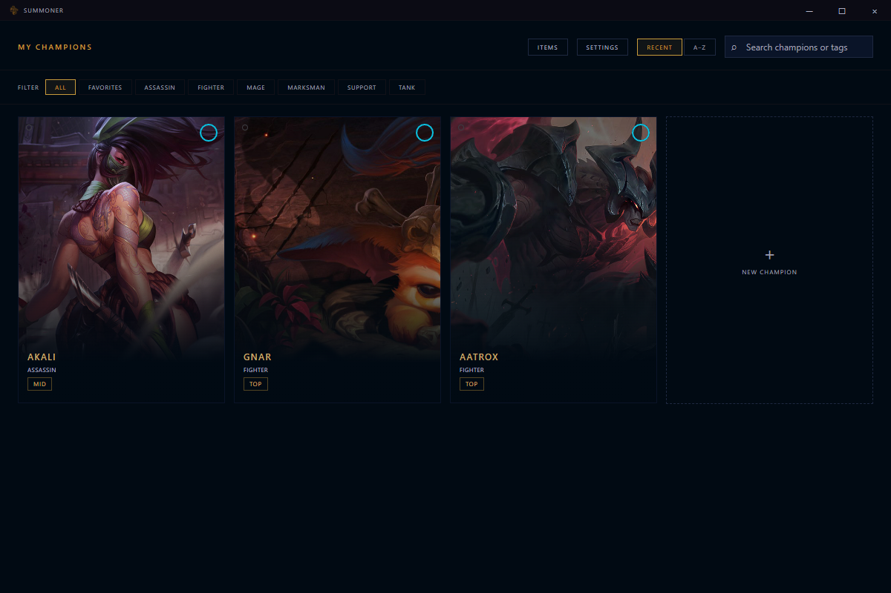
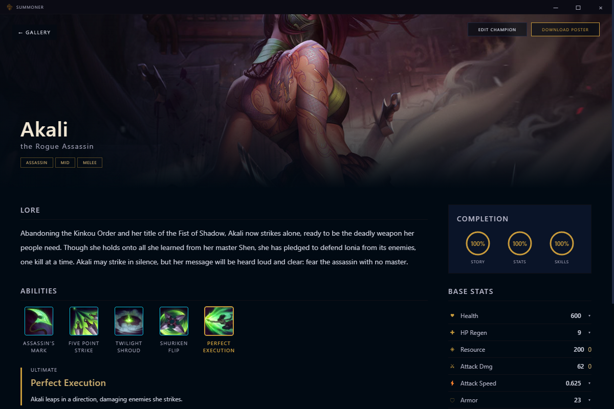
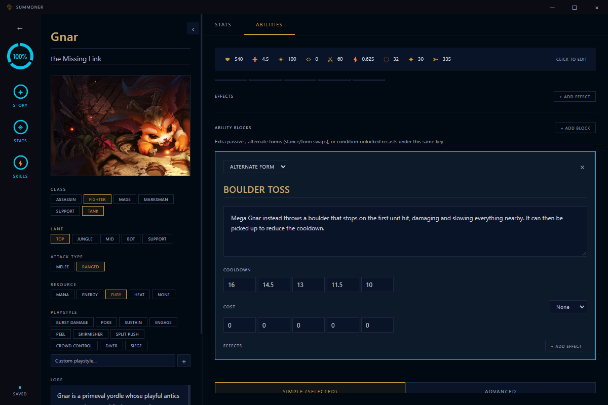
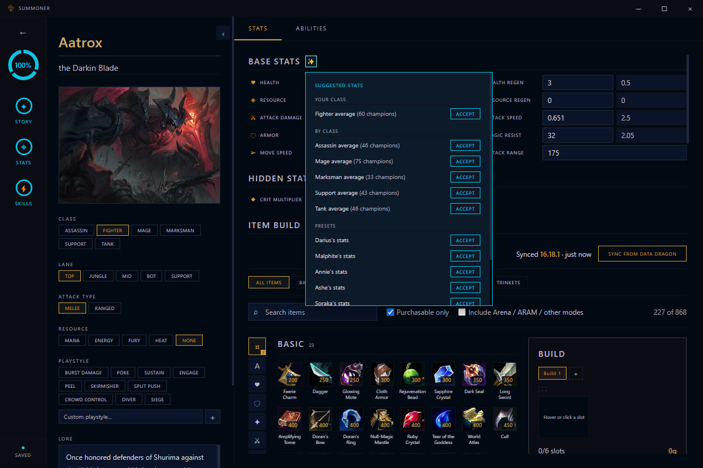

Personal Project
A champion design tool with the feel of Riot's own client. Write a champion's identity and lore, tune per-level base stats, build a five-slot ability kit with per-rank scaling and modular blocks, theorycraft item builds against live patch data, then present the result on a showcase page. Everything is stored locally — no server, no account.
Latest release: v0.2.2




Screenshots show Aatrox, Gnar, and Akali, loaded from Riot's public Data Dragon feed as sample data.
Name, title, lore, classes, lane, resource type, splash art with a drag-to-reposition focal point, and full base and per-level growth stats.
Passive plus Q/W/E/R, each with cooldown, cost, and effects that scale per rank (including AP/AD ratios), plus custom icons. Any key can take "+" blocks: extra passives, alternate forms like Gnar's Mega spells, or condition-unlocked recasts like Akali's.
The full item catalog and champion roster sync from Riot's public feed, with no API key. A hover pop-up suggests base stats from per-class averages or a real champion preset.
Up to four named item builds per champion, with stacking rules read from the data and a real-time stat comparison against the champion's base stats.
A splash-art-forward view page with an icon-row and spotlight ability display, plus a one-click downloadable poster of the whole kit.
One SQLite file on your machine. Export and import your library as JSON to move it between computers.
contextIsolation on and a narrow preload bridge as the only path between the renderer and the main process.
file:// where path-based routes 404.
Windows 10/11 installer with built-in update checks. No account, and no internet needed except for the optional Data Dragon sync and update check.
Latest release: v0.2.2
The installer isn't code-signed, so Windows SmartScreen may warn you: choose "More info", then "Run anyway". Summoner is an unofficial fan project and isn't endorsed by Riot Games. League of Legends and its champion names and art are trademarks and property of Riot Games, Inc.